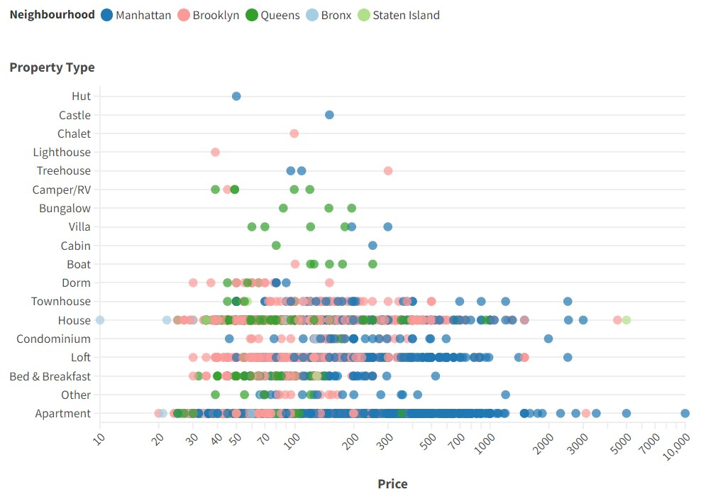

Chapter 10 Flourish
Definición
10.1 Ejemplo
▸ Los objetivos de esta actividad son:
- Descubrir cómo la estructura de los datos determina las posibilidades de visualización.
- Iniciarse en el pensamiento de estructuración de datos para su visualización.
- Trabajar con la herramienta Flourish para realizar 2 visualizaciones y una historia que transmitan información correcta de los datos.
▸ Utilizando la herramienta Flourish, realice 2 visualizaciones que permitan conocer información interesante sobre los datos. Es posible, que para determinadas visualizaciones tengan que modificar los datos utilizando alguna herramienta como Microsoft Excel. Debe contener al menos dos visualizaciones e indicar con una historia, qué información descubrió a partir de los datos, reflejando así la utilidad de las visualizaciones.
▸ El conjunto de datos proporcionado (adjunto) contiene información de 30479 alojamientos de Airbnb en la ciudad de New York. En concreto, entre diferentes datos, se han registrado el barrio en el que se encuentra, el tipo de propiedad y de habitación que se alquila, número de camas, precio, número de reviews y la puntuación promedio entre 0 y 100 obtenidas en las reviews.
▸ Al final de la actividad usted será capaz de: 1. Importar datos a Flourish. 2. Crear una visualización partiendo de los datos. 3. Descubrir la información que contienen los datos. 4. Redactar una Historia basada en las visualizaciones realizadas.
Desarrollo:
Primero, nos dirijimos al enlace: https://flourish.studio/
Segundo, debemos seleccionar el tipo de gráfico que desea mostrar y de ese modo, deberá arreglar su base de datos.
Emepecemos, selecciona “New visualization”
Ahora debemos elegir el tipo de gráfico y así arreglar la base de datos
La base de datos debe estar organizada así:
Entonces, el gráfico quedaría así:
Elegimos un nuevo tipo de gráfico
La base de datos debe estar organizada así:
Con nuestros datos, hemos organizado la base así:
La información reportada queda así:
Elegimos un nuevo gráfico
La base de datos debe estar organizada así:
Con nuestros datos, hemos organizado la base así:
La información reportada queda así:
Procedemos a seleccionar un nuevo gráfico
La base de datos debe estar organizada así:
Nuestra base queda así:
Gráficamente:
Bien, ya que tenemos la información en gráficos, procedemos a realizar un informe en Canva (https://www.canva.com/)
Seleccionamos la plantilla acorde a nuestros gustos:
Una vez seleccionada la plantilla, en la sección Apps buscamos “Flourish” y elegimos los gráficos que hemos realizado previamente en Flourisch, por tanto, puedes ir organizando la información y analizando. A continuación, presentamos como quedó el informe en Canva.